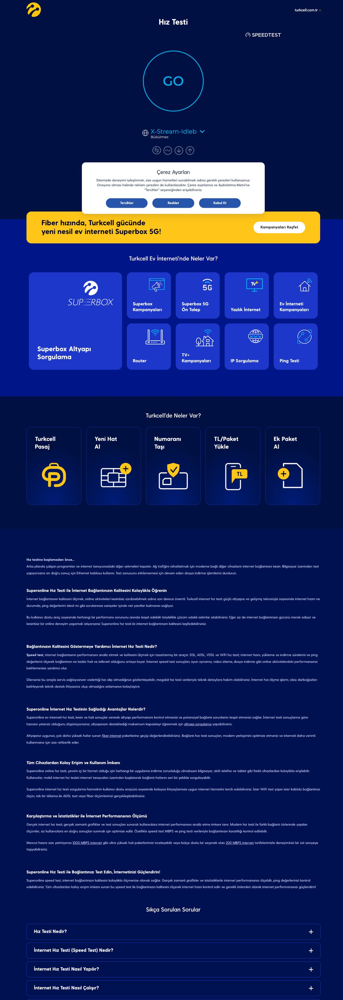
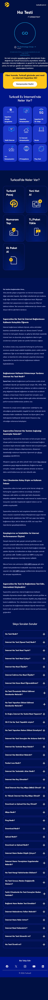
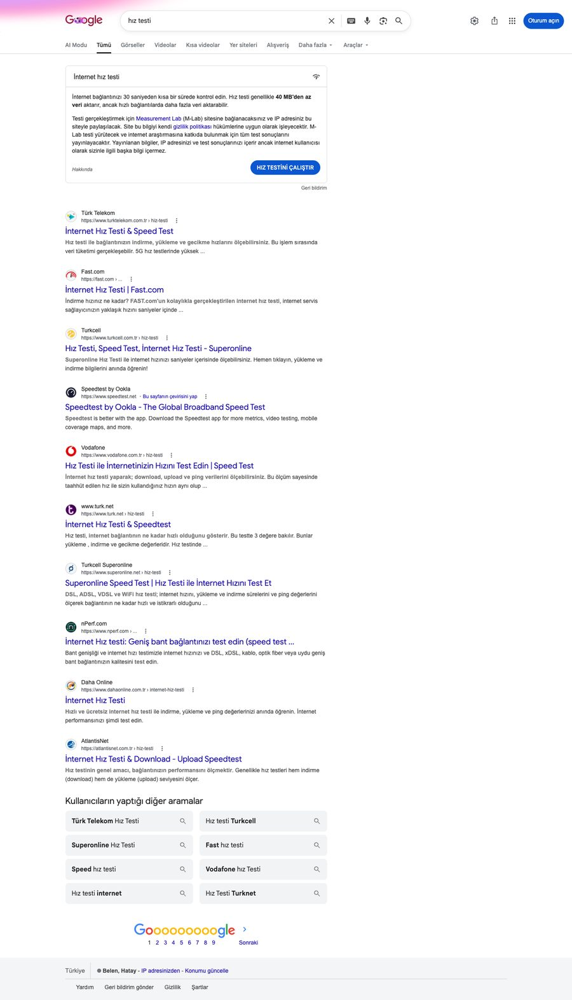
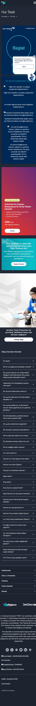
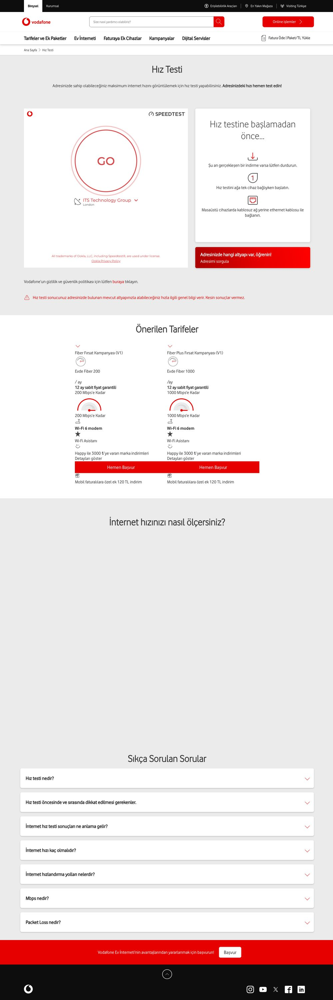
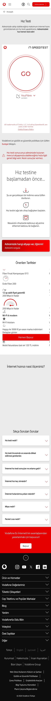
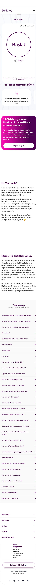

Hız Testi Query'lerinde 1. Sıra Hedefi ve Dönüşüm Planlaması
Turkcell hız testi sayfası, ayda toplam 4,17 milyon arama alan dört ana keywordde ilk dörtte yer alıyor. Sayfa teknik olarak hızlı ve güçlü; 1. sıranın önündeki engeller içerik derinliği, sayfa otoritesi ve dönüşüm mimarisidir.
- Mevcut konum: speedtest'te 2.; hız testi, internet hız testi ve speed test'te 4. sırada.
- 1. sıranın önündeki üç engel: (1) içerik derinliği (sayfa rakiplerin yarısı uzunlukta), (2) sayfa otoritesi (URL Rating 12; Türk Telekom 21), (3) dönüşüm mimarisi (net teklif veya sonuç-tetikli öneri yok).
- Bu rapor ne içeriyor: doğrulanmış sıralama ve keyword analizi, content gap ve rakip içerik karşılaştırması, AI/GEO ve şema yol haritası, teknik & on-page denetim, uygulamaya hazır içerik brief'i ve önceki çalışmaların güncel durumu.
- Rakip sayfaları detaylı incelendi: başta 1. sıradaki Türk Telekom ve aynı tarz hizmet veren Vodafone olmak üzere rakiplerin hız testi sayfaları içerik, dönüşüm ve keyword yoğunluğu düzeyinde tek tek karşılaştırıldı.
- Ek olarak teslim edildi: sayfanın dönüşüm odaklı yeniden kurgusunu gösteren tasarım örneği (5 varyant) ve içerik ekibinin doğrudan yazıma geçebileceği Hız Testi Sayfası İçerik Brief'i.
Turkcell Hız Testi Sayfası: Sıralama Durumu ve Yapısal Geliştirmeler
Sayfa, kullanıcının test aracıyla etkileşime girdiği bir araç / hub sayfasıdır. Ana içerik, Turkcell alt alan adına (turkcellhiztesti.speedtestcustom.com) bağlı Ookla Speedtest Custom aracıdır; altında 37 maddelik bir SSS bölümü ve Superbox / ev interneti kampanya kutuları yer alır. Sayfa teknik olarak hızlıdır (ölçülen Lighthouse performans puanı 91/100, LCP 1,23 sn, CLS 0,099; ayrıntı için bkz. Bölüm 09). Sıralamayı ve dönüşümü etkileyen iki yapısal konu öne çıkıyor.


Sıralamalar ve odak keywordlerdeki durum
Kaynak: Ahrefs (Türkiye), gözlem 21-26 Haziran 2026. DR = Domain Rating, UR = URL Rating. Turkcell satırı sarı şeritle işaretlidir.
Turkcell sırası · dört ana keyword
Sayfa otoritesi (URL Rating)
"hız testi" · 1.570.000 arama/ay · Turkcell 4. sırada
| # | Sonuç | DR | UR | Trafik |
|---|---|---|---|---|
| 1 | Google bilgi kutusu (knowledge card) | – | – | – |
| 2 | turktelekom.com.tr/hiz-testi | 76 | 21 | 928.675 |
| 3 | fast.com/tr | 86 | 20 | 668.644 |
| 4 | turkcell.com.tr/hiz-testi · Turkcell | 78 | 12 | 496.355 |
| 5 | speedtest.net | 91 | 46 | 1.998.212 |
| 6 | vodafone.com.tr/hiz-testi | 73 | 23 | 271.426 |
| 7 | turk.net/hiz-testi | 66 | 12 | 267.459 |
| 9 | superonline.net/hiz-testi (aynı grup; ayrı alan adı) | 59 | 13 | 162.156 |
"speedtest" · 1.280.000/ay · Turkcell 2. sırada
| # | Sonuç | UR |
|---|---|---|
| 1 | speedtest.net (+ site bağlantıları) | 46 |
| 2 | turkcell.com.tr/hiz-testi | 12 |
| 3 | turktelekom.com.tr/hiz-testi | 21 |
| 5 | fast.com/tr | 20 |
Fırsat speedtest.net dışında rakip yok; 1. sıraya en yakın olunan keyword budur.
"speed test" · 478.000/ay · Turkcell 4. sırada
| # | Sonuç | UR |
|---|---|---|
| 1 | speedtest.net | 46 |
| 2 | turktelekom.com.tr/hiz-testi | 21 |
| 3 | Google bilgi kutusu | – |
| 4 | turkcell.com.tr/hiz-testi | 12 |
"internet hız testi" (844.000/ay) keyword'ünde de tablo aynı: Turkcell 4., üstte Türk Telekom ve Fast.com.

Hedef kelimeler ve çevresindeki talep
Ana hedef kelimeler · aylık arama hacmi
| Kelime | Hacim/ay | KD | Niyet | Mobil% | Not |
|---|---|---|---|---|---|
| hız testi | 1.570.000 | 69 | bilgi | 76 | Ana hedef |
| speedtest | 1.280.000 | 72 | bilgi | 65 | Turkcell 2. |
| internet hız testi | 844.000 | 62 | bilgi | 86 | Ana hedef |
| speed test | 478.000 | 70 | bilgi | 56 | Ana hedef |
| türk telekom hız testi | 72.000 | 64 | markalı | 54 | Rakip markalı |
| ip sorgulama | 15.000 | 54 | bilgi | 42 | 404 link ip-adresim sayfası canlı, iç link verilebilir |
| turkcell hız testi | 8.600 | 54 | markalı | 78 | Kendi markalı |
| ping testi | 2.900 | 1 | bilgi | 28 | KD 1 · kolay 1. sıra Superonline'a gidiyor |
| 5g hız testi | 60 | 63 | bilgi | 96 | AI Overview tetikliyor |
- ping testi · 2.900/ay, zorluk (KD) 1. Turkcell'in kendi sayfası var (turkcell.com.tr/internet-ping-testi) ama hız testi sayfasındaki bağlantı Superonline'a gidiyor. Gömülü ping aracı ve site içi bağlantı ile 1. sıra hedeflenebilir.
- ip sorgulama · 15.000/ay, KD 54. Hız testi sayfasındaki bağlantı 404'e gidiyor; oysa Turkcell'in turkcell.com.tr/kampanya/ip-adresim sayfası canlı. Bu sayfaya site içi bağlantı verilerek değerlendirilebilir.
- internet hız testi ookla · 1.600/ay, KD 6.
Rakiplerin trafik aldığı, bizim daha az trafik aldığımız kelimeler ve içerikleri
Rakiplerin hız testi sayfalarının trafik getiren kelimeleri Turkcell'in sayfasıyla karşılaştırıldı. Aşağıdaki kelimelerde rakipler iyi sıralanırken Turkcell ya hiç sıralamıyor ya da 5-6. sırada. Bunların tamamı içerik ve başlık düzeyinde kapatılabilir.
Kelime boşluğu
| Kelime | Hacim/ay | KD | Türk Telekom | Turkcell | Durum |
|---|---|---|---|---|---|
| internet speed test | 68.000 | 70 | 2. (8.485 trafik) | sıralamıyor | Boşluk |
| fast test | 25.000 | 65 | 2. (2.454) | sıralamıyor | Boşluk |
| adsl hız testi | 12-16 bin | 67 | 2. (3.642) | sıralamıyor | Boşluk |
| internet hızı ölçme | 7.600 | 65 | 1. (4.503) | 5. (443) | Zayıf |
| mbps test | 4.000 | 70 | Vodafone 5. | sıralamıyor | Boşluk |
| internet hızı | 41.000 | 67 | 2. (8.640) | 6. (3.198) | Zayıf |
| internet test | 16.000 | 69 | 2. (3.085) | 5. (1.580) | Zayıf |
İçerik ve modül boşluğu
| Öğe | Türk Telekom | Vodafone | TurkNet | Turkcell | Aksiyon |
|---|---|---|---|---|---|
| Hız-ihtiyaç eşleme tablosu | var | var | var | yok (sadece metin) | Ekle |
| İndirme süresi karşılaştırma tablosu | var | kısmi | yok | yok | Ekle |
| 5G SSS kümesi (5G nedir, faydaları, SIM uyumu) | var (6+) | kısmi | yok | yok | Ekle |
| ADSL'e özel içerik | var | yok | yok | yok | Ekle |
| "İnternet hızı nasıl ölçülür" özel bölüm | var | var | var | dağınık | Ekle |
| Net fiyatlı paket kartı (CRO) | dolaylı | var (799/1.149 TL) | yok | yok | Ekle |
SSS (FAQ) boşluğu
Turkcell, 37 soruyla en geniş SSS envanterine sahip. Rakiplerde olup Turkcell'de bulunmayan sorular:
- 5G kümesi: "5G nedir?", "5G'nin faydaları neler?", "4.5G SIM kart 5G'yi destekler mi?", "5G ücretli mi?", "5G'ye nasıl geçilir?", "5G hız testinde nelere dikkat edilir?" (Türk Telekom'da var)
- Bağlantı türü: "ADSL hız testi nasıl yapılır?", "ADSL ile fiber hız farkı nedir?"
- Ölçüm: "İnternet hızı nasıl ölçülür?" sorusunu bağımsız ve güçlü bir başlık olarak vermek
- Mobil uzun kuyruk (Excel önerisinden, hâlâ eksik): eski SIM kartın 5G sınırı, modem çip seti etkisi, baz istasyonu uzaklığı, Carrier Aggregation, adil kullanım politikası, mobil upload düşüklüğü, kapalı alanda hız.
Rakip sayfalarda neler var ve Türk Telekom neden üstte
| Marka | Sıra | Test aracı | Dönüşüm öğeleri | SSS | Şema |
|---|---|---|---|---|---|
| Türk Telekom | 2. | Markalı Ookla (kendi alan adı) | 18 ay fiyat garantili kampanya, 5G başvuru, altyapı sorgulama | 31 | Yok |
| Vodafone | 6. | Kendi aracı | Net fiyatlı Fiber 200/1000 kartları (799/1.149 TL), "Hemen Başvur" | 8 | Yok |
| TurkNet | 7. | Kendi aracı (jitter + packet loss) | "Altyapı Sorgula" (4 kez), "GigaFiber İstiyorum" formu | 32 | Yok |
| Turkcell | 4. | Markalı Ookla Speedtest Custom | Dağınık kampanya kutuları; net teklif veya akıllı öneri yok | 37 | Yok |
| Fast.com | 3. | Netflix aracı (otomatik başlar) | Yok (bilinçli tercih) | 8 | Yok |
| Speedtest.net | 1./5. | Ookla (çoklu metrik) | Uygulama indirme, reklamsız üyelik | 0* | Yok |
*Speedtest.net ana sayfasında SSS yok; ayrı sayfada. Turkcell'in SSS sayısı (37) en yüksek, ancak şema olmadığı için bu derinlik zengin sonuçlara ve yapay zeka alıntılarına yansımıyor.
Türk Telekom neden 2. sırada (Turkcell'in üstünde)
- Hız-ihtiyaç eşleme metni ve indirme süresi tablosu: yapısal, taranabilir ve kendi içerik servislerini sayfaya çeken bir kurgu. Turkcell'de bu içerik düz metin halinde, tablo yok.
- Marka tutarlılığı: sayfa baştan sona "Türk Telekom" diliyle. Turkcell'in gövdesi "Superonline".
- 5G başvuru akışı (5555'e SMS, cihaz uyumluluk) ve test sayfasında net teklifli kampanya bandı. Turkcell'de yok.
- Not: test aracı bir fark yaratmıyor; her iki taraf da markalı Ookla Speedtest Custom kullanıyor. Fark içerik derinliği, marka tutarlılığı ve dönüşüm kurgusunda.
Rakip sayfalar (çerez kabul edilerek alınan ekran görüntüleri)
Her rakip için masaüstü ve mobil görünüm. Görsele tıklayın; mobil görüntüler uzun olduğundan açılan pencerede kaydırarak tüm sayfayı görebilirsiniz.






Yapay zeka aramalarında görünürlük (GEO)
"hız testi" ve türevlerinde SERP'te sürekli bir bilgi kutusu (knowledge card) görünüyor; "5g hız testi" gibi keywordler ise AI Overview tetikliyor. İncelenen altı rakibin hiçbiri JSON-LD şema işaretlemesi kullanmıyor. Bu, hem zengin sonuç hem de yapay zeka alıntıları için tamamen boş bir alan.
GEO yol haritası
- Alıntılanabilir tanım: "Hız testi nedir?" sorusu için 40-60 kelimelik net bir paragraf (bilgi kutusu ve AI Overview hedefi). Yeni
- FAQPage şeması: mevcut 37 maddelik SSS işaretlenirse AI Overview ve "diğer sorular" alıntıları artar. +★
- WebApplication şeması: sayfanın bir ölçüm aracı olduğunu tanımlar. +★
- Makine okunur karşılaştırma tablosu (hız ile kullanım/indirme süresi) ve Dataset şeması. +★
- robots.txt ve llms.txt: GPTBot, Google-Extended ve PerplexityBot erişimine izin. Yeni
superonline.net'e giden bağlantılar ve Turkcell içi karşılıkları
Sayfadaki menü ve gövde bağlantılarının çoğu superonline.net alan adına gidiyor. superonline.net ayrı bir alan adı olduğundan bu bağlantılar hem kullanıcıyı Turkcell ekosisteminden çıkarıyor hem de sayfa otoritesini başka bir alan adına aktarıyor. Bağlantılar turkcell.com.tr içine alınarak kullanıcı Turkcell çatısı içinde tutulabilir. Aşağıda her bağlantı için Turkcell içi karşılık ve öneri yer alıyor.
| Bağlantı | Mevcut hedef (superonline.net) | Turkcell içi karşılık / öneri | Durum |
|---|---|---|---|
| Ping Testi | /internet-ping-testi | turkcell.com.tr/internet-ping-testi zaten var; bağlantı site içine alınmalı. İdeali: gömülü ping aracı (KD 1, kolay 1. sıra). | Yeni |
| IP Sorgulama | /ip-adresi-sorgulama | Hız testi sayfasındaki bağlantı 404; ancak Turkcell'in /kampanya/ip-adresim sayfası canlı. Bu sayfaya iç bağlantı verilmeli (15.000/ay, KD 54). | Yeni |
| altyapı sorgulama (gövde) | /altyapi-sorgulama | turkcell.com.tr ev interneti altyapı sorgulama zaten var | Yeni |
| fiber internet / 1000 / 200 Mbps | /ev-interneti/… | turkcell.com.tr/ev-interneti tarife sayfaları | Yeni |
Ölçüm aracını dönüşüm ve lead kanalına dönüştürmek
Sayfa bugün yüksek trafik alıyor (tahmini 496.000/ay organik), ancak ziyaretçi testi yapıp ayrılıyor; net bir dönüşüm yolu yok. Rakiplerin en iyi fikirleri ve hiçbirinde olmayan bir fikirle sayfa bir lead kanalına dönüştürülebilir. Bu önerilerin canlı bir uygulaması tasarım örneğinde 5 varyant olarak sunulmuştur.
Kategori liderliği fırsatı
Teste bağlı akıllı paket önerisi. Test biter bitmez ölçülen hıza göre öneri gösterilir: "Hızınız 38 Mbps; 4K yayın ve oyun için Fiber 100'e geçin." ardından tek tıkla başvuru. İncelenen rakiplerin hiçbirinde yok; hem dönüşümü hem "en akıllı araç" algısını getirir. +★
Rakiplerden alınacak en iyi 4 fikir
- Net teklifli kampanya bandı (Türk Telekom netliği + Vodafone fiyatı) Yeni
- Sayfa içi tekrarlı adres/altyapı sorgulama akışı (TurkNet) Yeni
- Hız-ihtiyaç tablosunun her satırını ilgili pakete bağlama Yeni
- Fast.com'un sürtünmesiz deneyimi + sonuç sonrası operatör hunisi Yeni
Tasarım örneğindeki bileşenler ve sayfada yerleşimi
Tasarım örneğinde uygulanan başlıca bileşenler, sayfada yukarıdan aşağıya şu sırayla konumlandırılmalıdır. Yerleşim, kullanıcının "test et → sonucu gör → aksiyon al" akışını izler.
| Bileşen | Sayfada yeri | Amaç |
|---|---|---|
| Test aracı + test öncesi ipuçları | Hero (en üst) | İlk saniyede sürtünmesiz ölçüm |
| Sonuç-tetikli paket önerisi (akıllı sonuç) | Test biter bitmez, aracın hemen altında | Dönüşüm anını yakalama |
| Hız-ihtiyaç ve indirme süresi tabloları | Sonuç bloğunun altında | "Kaç Mbps?" sorusunu paketle eşleme |
| İçerik (rehber) + SSS | Tabloların altında | SEO derinliği, alıntılanabilirlik |
| "Turkcell'de neler var?" on-domain kart hub'ı | SSS'ten önce veya footer üstü | İç bağlantı + equity'yi Turkcell'de tutma |
"Turkcell'de neler var?" kart hub'ı ve eklenebilecek karoseller
Tasarım örneğindeki kart hub'ı, bugün superonline.net'e giden bağlantıları Turkcell içinde tutan bir iç bağlantı bileşenidir (Altyapı Sorgulama, Ping Testi, IP Sorgulama, Superbox 5G, Ev İnterneti, Fiber İnternet, Mobil Tarifeler, Pasaj). İkonlu, hover'da vurgulanan kartlarla görsel olarak güçlendirildi. Sayfaya değer katacak ek karosel/şerit önerileri:
Dönüşüm odaklı karoseller
- Sonuç-tetikli paket karoseli: ölçülen hıza göre 2-3 paketi yan yana, "sana önerilen" rozetli. +★
- "Hızını yükselt" karşılaştırma şeridi: mevcut hız vs Turkcell Fiber 1000, net fiyatla. Yeni
- Kampanya bandı: net fiyatlı, süreli kampanya kartı (Türk Telekom netliği + Vodafone fiyat şeffaflığı). Yeni
İçerik ve araç karoselleri
- İlgili araçlar karoseli: Ping Testi, IP Sorgulama, Altyapı Sorgulama (on-domain araç hub'ı). Yeni
- İlgili rehber içerikleri: "internet neden yavaş", "ideal hız kaç olmalı" gibi blog/rehber kartları (konu kümesi + iç bağlantı). Yeni
- 5G / Superbox karoseli: mobil ve kurulumsuz internet vaadi (Turkcell'in güçlü alanı). +★
Demo bileşenleri: neden eklenmeli ve beklenen kazanım
Tasarım örneğinin son halindeki başlıca bileşenler ve her birinin dönüşüm/SEO gerekçesi:
| Bileşen (demo) | Ne yapıyor | Neden eklenebilir | Beklenen kazanım |
|---|---|---|---|
| Sonuç-tetikli akıllı paket önerisi (Varyant A) | Test biter bitmez ölçülen hıza göre paket önerir, tek tıkla başvuru | Hiçbir rakipte yok; testten sonra net bir sonraki adım sunulmuyor | Test → başvuru dönüşümü; "en akıllı araç" algısı ve kategori liderliği |
| Hız Karnesi (Varyant B) | Download/upload/ping skor kartları + "bu hız neye yeter" + güven şeridi (Ookla/Turkcell/KVKK) | Sade sonuç ekranını bilgilendirici ve güven verici hale getirir | Sayfada kalma süresi ve pakete tıklama oranı artışı |
| Paket Köprüsü (Varyant E) + "Sana Uygun Paketler" karoseli | Sonucu Turkcell One, 5G'li hat ve ev interneti paketlerine bağlar | Yüksek trafik (tahmini 496.000/ay) bugün dönüşüme bağlanmıyor | Çapraz satış; tek ziyaretten birden çok ürün fırsatı |
| İki "Neler Var" on-domain kart hub'ı (Ev İnterneti + Turkcell) | superonline.net yerine turkcell.com.tr araç/paket bağlantıları | Sayfa bugün equity'yi ayrı bir alan adına sızdırıyor (Bölüm 07) | İç bağlantı + otorite Turkcell'de kalır; URL Rating'i besler |
| Yan ray CTA'ları (One Plus + 5G) | Geniş ekranda boş sol/sağ alanlara paket yönlendirmesi | Sağ/sol boşluklar değerlendirilmiyor; varyanta göre içerik/logo değişir | Görünür alan başına ek dönüşüm teması |
| Hız-ihtiyaç + indirme süresi tabloları | Her satır ilgili Turkcell pakete bağlanır | Rakiplerde (TT/Vodafone/TurkNet) var, Turkcell'de yok | "Kaç Mbps?" niyetini pakete köprüler; bilgi → dönüşüm |
| Adres/altyapı lead akışı (Varyant D) | Numara + adres ile lead toplama formu | TurkNet modeli; sayfada bugün lead kanalı yok | Doğrudan lead/başvuru üretimi |
| Premium "Test tamamlandı" rozeti + interaktif SSS | Nabız animasyonlu rozet, açılır-kapanır kümelenmiş SSS akordeonu | Görsel kalite ve okunabilirlik | Algılanan kalite ve SSS etkileşimi artışı |
Tasarım örneği, sayfanın üst menü ve footer yapısını koruyup gövdeyi 5 dönüşüm yaklaşımıyla yeniden kurar: A · Akıllı Sonuç, B · Hız Karnesi, C · Değer/Paket, D · Lead/Altyapı, E · Paket Köprüsü. Bileşenler varyanta göre farklılaşır (örn. yan ray karoselleri ve "Sana Uygun Paketler" içeriği her varyantta değişir).
Teknik & On Page SEO Elementleri İncelemesi & Çıkarımlar
Sayfa içi (on-page) denetimi
Bunlar sayfa içi SEO bulgularıdır (performans metriği değil). Kaynak: DataForSEO sayfa içi denetimi, 26 Haziran 2026.
| Alan | Bulgu | Öncelik |
|---|---|---|
| Başlık etiketi | "Hız Testi, Speed Test, İnternet Hız Testi - Superonline" (55 karakter); marka kuyruğu Superonline | P0 |
| Meta açıklama | "Superonline Hız Testi…" (143 karakter); Turkcell marka tutarlılığı yok | P1 |
| H1 | "Hız Testi" (tek başına; marka veya değer ifadesi yok) | P1 |
| Şema (JSON-LD) | Yok (FAQPage, WebApplication, HowTo, BreadcrumbList hiçbiri) | P0 |
| Breadcrumb | Yok (Türk Telekom'da var) | P2 |
| İç / dış bağlantı | 11 iç, 17 dış (çoğu superonline.net) | P0 |
| İçerik / okunabilirlik | Düşük metin oranı, yoğun blok metin (koyu tema) | P1 |
Core Web Vitals · ölçülen değerler
Yöntem: Lighthouse (DataForSEO, masaüstü) ve gerçek tarayıcı ölçümü, 26 Haziran 2026. Eşikler: LCP iyi < 2,5 sn, CLS iyi < 0,1, TBT iyi < 200 ms.
Lighthouse (masaüstü)
| Performans puanı | 91 / 100 | İyi |
| LCP | 1,23 sn | İyi |
| FCP | 1,20 sn | İyi |
| CLS | 0,099 | Sınırda |
| TBT | 76 ms | İyi |
| TTFB (sunucu yanıtı) | 223 ms | İyi |
| Toplam sayfa ağırlığı | ~2,0 MB | İzlenmeli |
Gerçek tarayıcı ölçümü (çapraz kontrol)
- LCP 0,20 sn, FCP 0,19 sn, CLS 0, sayfa yükleme 1,07 sn.
- Diğer Lighthouse puanları: Erişilebilirlik 81/100, En İyi Pratikler 96/100, SEO 100/100.
- 3. taraflar: çerez yönetimi, GTM, Google Analytics, reklam etiketleri, CDN.
Gerçek kullanıcı (CrUX) saha verisi, Search Console erişimiyle ayrıca raporlanabilir.
Sayfa hızı ve gömülü test aracının hızlandırılması
Ana etkileşim öğesi, turkcellhiztesti.speedtestcustom.com üzerinden gelen Ookla aracıdır. Sayfanın hızlı açılması ve "GO" butonunun erken tıklanabilir olması için:
- Erken bağlantı (preconnect): Ookla ölçüm ve CDN alan adlarına önceden bağlanarak aracın gecikmesini azalt.
- Tıklamada yükleme (facade): aracı hemen yüklemek yerine hafif bir görselle göster, kullanıcı etkileşime geçince gerçek aracı yükle. Ana içerik daha hızlı görünür.
- 3. taraf etiketlerini ertele: GTM, Analytics ve reklam etiketlerini etkileşim sonrasına ertele; 2,0 MB ağırlığın önemli kısmı 3. taraf.
- Render engelleyen kaynakları azalt: kritik CSS satır içine alınmalı, geri kalan ertelenmeli.
fast.com start vermeden oto hız testi değerlendirmesi
fast.com'da sayfa açılır açılmaz test otomatik başlar. Nedeni, Netflix'in amacının "bağlantım video için yeterli mi?" sorusuna en hızlı şekilde yanıt vermesi için tasarlanmasıdır. Sunucu seçimi, ayar veya reklam yoktur. Otomatik başlatma etkileşimi artırır ve anında cevap algısı verir.
Hız Testi Sayfası İçerik Brief'i
Brief + aksiyon planını Excel'e aktarBu brief, içerik ekibinin doğrudan yazıma geçebilmesi için hazırlanmıştır: sayfa başlığı, başlık hiyerarşisi, hangi kelimelerin nerede ve ne sıklıkla geçeceği, hangi tabloların ve SSS'lerin yer alacağı, özet ve giriş içeriği. Hedef kelimeler; ana hacim, rakip boşluğu ve uzun kuyruk (long-tail) olmak üzere üç katmanda verilmiştir.
1. Başlık ve meta
- Başlık (title)
- İnternet Hız Testi, Speed Test & Ping | Turkcell (≤ 60 karakter; "Superonline" kuyruğu kaldırılır)
- Meta açıklama
- Turkcell hız testi ile internet indirme, yükleme ve ping değerini saniyeler içinde ölç. Sonuca göre sana en uygun Turkcell internetini keşfet. (≤ 155 karakter)
- H1
- İnternet Hızını Saniyeler İçinde Ölç
- Birincil kelimeler (ana hacim)
- hız testi (1,57M) · speedtest (1,28M) · internet hız testi (844K) · speed test (478K)
- Rakip boşluğu kelimeleri (rakipte var, Turkcell'de zayıf/yok)
- internet speed test (68K) · fast test (25K) · adsl hız testi (12-16K) · internet hızı (41K) · internet hız (15K) · internet test (16K) · internet hızı ölçme (7,6K) · mbps test (4K). Tümünde Türk Telekom üst sırada; bu kelimeler içerik + başlık + SSS ile kapatılabilir.
- Uzun kuyruk kelimeler (long-tail)
- internet hızı kaç olmalı · 5g hız testi · wifi hız testi · fiber hız testi · ping nedir · jitter nedir · packet loss nedir · mbps nedir · download upload nedir · internet hızı nasıl artırılır · internet neden yavaş · mobil hız testi · 4.5g hız testi
2. Başlık hiyerarşisi (içerik planı)
| Başlık | Altında ne olmalı (detay) | Hedef + uzun kuyruk kelimeler |
|---|---|---|
| H1 · İnternet Hızını Saniyeler İçinde Ölç | Gömülü test aracı; "test öncesi ipuçları" (diğer cihazları kes, Ethernet, indirmeleri durdur); test bitince sonuç-tetikli akıllı paket önerisi. İlk ekranda araç + tek satır değer vaadi. | hız testi, speed test, hız testi yap, internet hızı testi |
| H2 · İnternet Hız Testi (Speed Test) Nedir? | 40-60 kelimelik, tek paragraf, alıntılanabilir tanım (AI Overview / bilgi kutusu hedefi). "internet hız testi …dır" kalıbıyla başla. | internet hız testi, speedtest, speed test nedir, internet speed test |
| H2 · İnternet Hızı Nasıl Ölçülür? | Numaralı adım adım anlatım + HowTo şeması. "indirme/yükleme/ping nasıl ölçülür" alt paragrafları. Rakip boşluğu: Türk Telekom bu kelimede #1, Turkcell #5. | internet hızı ölçme, internet hızı nasıl ölçülür, internet indirme hızı ölçme, internet hat hızı öğrenme |
| H2 · İnternet Hız Testinde Metrikler | Download, upload, ping, jitter, packet loss, Mbps için kısa tanım + ideal değer; her terim tek cümlede alıntılanabilir olsun. | ping nedir, jitter nedir, packet loss nedir, mbps nedir, download upload nedir |
| H2 · Hangi Hız Hangi Kullanıma Yeter? | Hız-ihtiyaç eşleme tablosu + 10 GB indirme süresi tablosu; her satır ilgili Turkcell paketine bağlanır. "kaç Mbps olmalı" keyword'lerini karşılar, dönüşüme köprü. | internet hızı kaç olmalı, ideal internet hızı, kaç mbps olmalı, download upload hızı kaç olmalı |
| H2 · ADSL, Fiber ve Wi-Fi Hız Testi | Bağlantı türüne göre farklar; ADSL'e özel paragraf (rakip boşluğu: adsl hız testi 12-16K, Türk Telekom #2, Turkcell yok). Wi-Fi vs kablolu ölçüm farkı. | adsl hız testi, wifi hız testi, fiber hız testi, adsl fiber farkı |
| H2 · Mobil ve 5G Hız Testi | Mobilde doğru ölçüm + 5G değer vaadi + 5G CTA. Turkcell'in en güçlü olduğu ama sayfada en az işlenen alan (aramaların %76-96'sı mobil). | 5g hız testi, mobil hız testi, 4.5g hız testi, telefon hız testi |
| H2 · Sıkça Sorulan Sorular | Mevcut 37 SSS korunur + 5G/ADSL/uzun kuyruk eklenir (FAQPage şeması). Aşağıdaki "Eklenecek SSS" listesine bakın. | uzun kuyruk SSS (long-tail) |
3. Kelime kullanım yoğunluğu (rakip karşılaştırmalı)
En önemli rakip 1. sıradaki Türk Telekom ve aynı tarz hizmet veren Vodafone hız testi sayfaları içerik düzeyinde tek tek incelendi. İçerik hacmi: Turkcell ~1.633 kelime · Türk Telekom ~2.643 · Vodafone ~3.630 · yani Turkcell sayfası rakiplerin yaklaşık yarısı kadar içeriğe sahip. Aşağıda hedef kelimelerin her sayfada gözlemlenen geçiş sayısı ve Turkcell için önerilen hedef yer alıyor.
| Kelime | Türk Telekom | Vodafone | Turkcell (mevcut) | Önerilen hedef | Aksiyon / nerede |
|---|---|---|---|---|---|
| download / indirme | 38 | 47 | 26 | 40-45 | Birincil metrik; gövde + SSS'de "indirme hızı" bağlamını artır |
| mbps | 13 | 31 | 16 | 22-25 | "kaç Mbps", örnek hız değerleri (100/1000 Mbps) |
| internet hızı | 30 | 47 | 32 | 38-40 | "İnternet hızı nasıl ölçülür" gövde içeriği |
| modem | 15 | 28 | 13 | 20 | "modem konumu / yeniden başlatma" pratik bölümü |
| packet loss / paket kaybı | 0 | 16 | 2 | 8 | Kısa "Paket kaybı nedir?" eğitim bloğu (Vodafone modeli) |
| 5g | 53 | 6 | 2 | 8-12 | Superbox 5G stratejisiyle uyumlu mobil/5G içeriği |
| fiber | 4 | 14 | 7 | 9-10 | Test sonrası fiber CTA bağlamı |
| wifi / kablosuz | 20 | 9 | 10 | 14 | "Wi-Fi yerine kablolu bağlan" test ipucu |
| hız testi | 33 | 63 | 48 | ~50 (koru) | H1, ilk paragraf, H2'ler, SSS · mevcut iyi |
| internet hız testi | 9 | 12 | 16 | ~16 (koru) | Tanım H2, meta · Turkcell önde |
| ölçüm (ölç- kökü) | 9 | 7 | 20 | ~20 (koru) | Turkcell rakiplerin önünde; güçlü yanı koru |
| ping / jitter | 11 / 0 | 5 / 0 | 13 / 4 | koru | Jitter'ı hiçbir rakip kullanmıyor; farklılaşma alanı |
Geçiş sayıları, üç markanın canlı hız testi sayfalarının görünür metni (nav/footer dahil) üzerinden hesaplandı; gözlem Haziran 2026. Kelimeler doğal okunacak şekilde yerleştirilmeli, aşırı tekrar (keyword stuffing) yapılmamalı.
4. Eklenecek tablolar
- Hız-ihtiyaç eşleme tablosu: 16-24 / 35-50 / 100 / 1000 Mbps satırları; sütunlar: ideal kullanım, 10 GB indirme süresi, ilgili Turkcell paketi (bağlantılı). Dataset şeması ile işaretlenebilir.
- İndirme süresi karşılaştırma tablosu: Mbps ile örnek dosya/uygulama indirme süreleri.
- Metrik açıklama tablosu: Download, Upload, Ping, Jitter, Packet Loss, Mbps tanımları ve ideal değerleri.
{
"@context": "https://schema.org",
"@type": "Dataset",
"name": "İnternet Hızına Göre İdeal Kullanım ve İndirme Süreleri",
"description": "Farklı internet hızlarının (Mbps) hangi kullanıma yettiğini ve 10 GB indirme süresini gösteren karşılaştırma tablosu.",
"creator": { "@type": "Organization", "name": "Turkcell" },
"url": "https://www.turkcell.com.tr/hiz-testi",
"variableMeasured": [
"İnternet hızı (Mbps)",
"İdeal kullanım",
"10 GB indirme süresi"
],
"keywords": ["internet hızı kaç olmalı", "kaç mbps", "indirme süresi"]
}
Bu şema, hız-ihtiyaç tablosunu makine tarafından okunabilir kılar; arama motorlarına tablonun bir veri seti olduğunu bildirir. Görünmez bir <script type="application/ld+json"> bloğu olarak sayfaya eklenir, ek yük bindirmez.
5. Eklenecek / cevaplanacak SSS
Mevcut 37 SSS korunur; rakip boşluğunu kapatmak için eklenecekler (FAQPage şeması ile):
- İnternet hızı nasıl ölçülür? · ADSL hız testi nasıl yapılır? · ADSL ile fiber hız farkı nedir?
- 5G nedir? · 5G'nin faydaları neler? · 4.5G SIM kart 5G'yi destekler mi? · 5G hız testinde nelere dikkat edilir?
- Mobil uzun kuyruk: eski SIM kartın hız sınırı, modem çip seti etkisi, baz istasyonu uzaklığı, Carrier Aggregation, adil kullanım politikası, mobil upload neden düşük, kapalı alanda hız.
6. Özet (giriş) bölümünde ne olmalı
Giriş paragrafı hem kullanıcının ilk saniyesini hem de bilgi kutusu/AI Overview alıntısını hedefler. Şu öğeleri sırasıyla içermeli:
- Ana kelime, ilk cümlede: "Turkcell internet hız testi ile…" kalıbıyla aç; ilk 1-2 cümlede "hız testi" ve "internet hız testi" geçsin.
- Araç vaadi: ölçülen metrikleri net say · indirme (download), yükleme (upload), ping ve jitter ölçümü.
- Alıntılanabilir tanım cümlesi: "İnternet hız testi, …dır" kalıbında 1 cümlelik net tanım (bilgi kutusu/AI Overview için).
- Tek satır değer önerisi: sonuca göre uygun Turkcell internetini/paketini öneren bir cümle (dönüşüme köprü).
- Sürtünmesizlik vurgusu: "saniyeler içinde", "ücretsiz", "tek tıkla" gibi ifadelerle güven ver.
- Marka tutarlılığı: tüm "Superonline" dili Turkcell çatısına taşınır; gövde ve başlık Turkcell markasıyla yazılır.
- Uzunluk: 40-60 kelime; tek paragraf, taranabilir ve doğal okunur olmalı.
Yapılacaklar
Aksiyon planı + brief'i Excel'e aktarİletilen iki çalışmanın güncel durumu
Önceden iletilenler ★, geliştirilmiş haller +★, canlı sayfada uygulanmış olanlar ✓ ile işaretlendi. İletilen maddeler turkcell.com.tr/hiz-testi sayfası üzerinden mevcut durum kontrol edilerek ilerlendi: sayfada toplam 37 SSS tespit edildi; aşağıdaki "uygulandı" maddeleri bu 37 SSS içinde bulunmaktadır, "uygulanmamış/yok" maddeler sayfada yer almamaktadır.
Çalışma 1 · PDF "5G Optimizasyon Önerileri"
| Öneri | Durum | Bu rapordaki karşılığı |
|---|---|---|
| GO butonu 5G mesajı ve bağlantı | Uygulanmamış | ★ CRO |
| Teste bağlı dinamik 5G mesajları | Uygulanmamış | +★ Akıllı paket önerisi |
| Sonuç ekranı CTA'sı | Uygulanmamış | +★ Sonuç = lead bloğu |
| 5G karşılaştırma modülü | Uygulanmamış | +★ Net fiyatlı karşılaştırma |
| 5G SSS başlıkları | Uygulanmamış | +★ 5G içerik bloğu |
| WebApplication ve Dataset şeması | Uygulanmamış | +★ Bütünleşik şema seti |
| Footer'a hız testi bağlantısı | Uygulanmamış | ★ SEO |
Çalışma 2 · Excel "SSS Önerileri"
Excel'deki SSS önerileri konu gruplarına ayrılarak canlı sayfadaki 37 SSS ile tek tek eşleştirildi. "Uygulandı" gruplar canlıda mevcut; "Yok" gruplar eklenmeli.
| SSS Grubu | Örnek sorular | Durum (canlı) | Aksiyon |
|---|---|---|---|
| Temel / tanım | Hız testi nedir? · İnternet hız testi (speed test) nedir? · Nasıl yapılır? · Nasıl çalışır? | Uygulandı ✓ | Koru |
| Ölçüm | İnternet hızı nasıl ölçülür? · İndirme hızı nasıl ölçülür? · Hat hızı nasıl öğrenilir? | Uygulandı ✓ | Bağımsız H2 ile güçlendir |
| Metrikler | Mbps nedir? · Ping nedir? · Jitter nedir? · Packet loss nedir? · Download/Upload nedir? | Uygulandı ✓ | Koru, tablolaştır |
| İdeal hız | İnternet hızı kaç olmalı? · İdeal kaç Mbps? · Download/upload kaç olmalı? | Uygulandı ✓ | Hız-ihtiyaç tablosuyla birleştir |
| Sorun giderme | Hızım neden düşük? · Yavaşlatan uygulamalar · Nasıl hızlandırılır? | Uygulandı ✓ | Koru |
| Güven / ücret | Hız testi ücretli mi? · Güvenilir mi? | Uygulandı ✓ | Koru |
| Bağlantı türü (ADSL / fiber) | ADSL hız testi nasıl yapılır? · ADSL ile fiber hız farkı nedir? | Yok | Ekle · "adsl hız testi" boşluğu |
| 5G kümesi | 5G nedir? · Faydaları? · 4.5G SIM 5G destekler mi? · 5G ücretli mi? · Nasıl geçilir? · 5G testinde nelere dikkat? | Yok | +★ Ekle · Türk Telekom'da var |
| Uzun kuyruk mobil | Eski SIM 5G sınırı · modem çip seti · baz istasyonu uzaklığı · Carrier Aggregation · adil kullanım · mobil upload düşüklüğü · kapalı alanda hız | Yok | ★ Ekle · Excel'de vardı, hâlâ eksik |
Öncelik Sırası
Aksiyonlar üç faza ayrıldı; her faz bir öncekinin üzerine kurulur. Aksiyonların etki/çaba önceliklendirmesi Bölüm 11 · Aksiyon Planı'ndadır.
Faz 1 · Temel
- Marka tutarlılığı: başlık, meta ve gövdeyi Turkcell çatısına taşı ("Superonline" dilini kaldır)
- superonline.net bağlantılarını turkcell.com.tr karşılıklarıyla değiştir (IP için /kampanya/ip-adresim dahil)
- FAQPage + WebApplication şeması ekle
- Footer ve ilgili sayfalardan hız testine iç bağlantı
Düşük çaba, yüksek etki. URL Rating ve marka sinyalini hızla iyileştirir.
Faz 2 · İçerik ve GEO
- Boşluk kelimeleri için içerik (internet speed test, adsl hız testi, internet hızı ölçme, mbps test)
- Hız-ihtiyaç eşleme + indirme süresi + metrik tabloları (her satır pakete bağlı) + Dataset şeması
- 5G / ADSL / ölçüm içeriği ve eksik SSS'ler (FAQPage)
- Alıntılanabilir tanım, breadcrumb + BreadcrumbList şeması, llms.txt/robots erişimi
- İçerik hacmini rakip seviyesine çıkar (~2.600-3.000 kelime); download/indirme ve mbps yoğunluğunu artır
Türk Telekom'un içerik avantajını kapatır, AI Overview'a girer.
Faz 3 · Dönüşüm
- Teste bağlı akıllı paket önerisi (sonuç-tetikli)
- Net fiyatlı paket kartları + "Sana Uygun Paketler" karoseli (One / 5G hat / ev interneti)
- Adres/altyapı lead akışı ve form
- İki "Neler Var" on-domain kart hub'ı + geniş ekran yan ray CTA'ları
- ping ve ip araç sayfaları ile hız testi arasında karşılıklı bağlantı
Sayfayı dönüşüm kanalına çevirir; tasarım örneğinde uygulandı.
Data'ların Alındığı Kaynaklar
Rapordaki tüm sayılar canlı araç çağrılarıyla, gözlem tarihiyle alınmıştır. Hacim ve sıralama için Ahrefs, sayfa içi ve performans ölçümü için DataForSEO ve gerçek tarayıcı ölçümü kullanılmıştır. Kaynaklar arasında küçük farklar olabileceğinden bir kaynak esas alınmış, diğeri çapraz kontrol için kullanılmıştır.
Kelime hacmi, zorluk (KD), niyet, SERP sıraları ve rakip kelime listeleri. Ülke: Türkiye.
Sayfa içi denetim, içerik analizi, Lighthouse performans ölçümü ve şema kontrolü.
Hedef ve rakip sayfaların masaüstü/mobil ekran görüntüleri, canlı SERP ve performans ölçümü.
Gözlem tarihi: 26-27 Haziran 2026. Rakip seti: Türk Telekom, Fast.com, Speedtest.net (Ookla), Vodafone, TurkNet. (superonline.net ayrı bir alan adı olarak referans alındı.) İşaretleme sistemi: ★ önceden iletildi +★ geliştirilmiş Yeni ✓ uygulandı.
Terimler
- SERP · arama motoru sonuç sayfası.
- KD · Keyword Difficulty; ilk 10'a girmenin zorluğu (0-100).
- DR / UR · Domain Rating / URL Rating; domain ve sayfa otoritesi.
- AI Overview · Google'ın yapay zeka yanıt bloğu; kaynakları alıntılar.
- GEO · Generative Engine Optimization; yapay zeka aramalarında görünürlük.
- knowledge card · SERP üstündeki bilgi kutusu.
- schema / JSON-LD · makine tarafından okunabilir yapısal veri.
- FAQPage / WebApplication / HowTo / Dataset · schema.org tipleri.
- CWV (LCP/CLS/INP) · Core Web Vitals performans metrikleri.
- long-tail · düşük hacimli, niş, uzun aramalar.